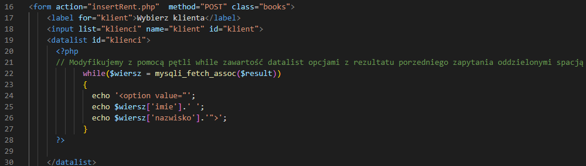

Tym razem kod php bedzie modyfikować kod html wiec należy zmienić rezszeżenie menu3.html na menu3.php.
Modyfikowanym znacznikiem HTML bedzie datalist który pozwala na wybór z wielu opcji przy jednoczesnym wyszukiwaniem ich poprzez wpisywany tekst.
 Poniżej przedstawiono zmodyfikowany datalist klientów z dopisanym separatorem w postaci:
Poniżej przedstawiono zmodyfikowany datalist klientów z dopisanym separatorem w postaci:
spacja " ".

Poniżej przedstawiono drugą modyfikację datalist książek z dopisanym separatorem w postaci:
spacja minus spacja " - ".
 Sprawdź poprawność działania znaczników datalist. Czy pojawiły się poprawne dane?
Sprawdź poprawność działania znaczników datalist. Czy pojawiły się poprawne dane?
Jak zapewne zaówarzyłeś formulaż ma akcję na "insertRent.php". Wiec utwórz ten plik.
Poniżej przedstawiono pierwszą cześć kodu w raz z komentarzami zwróć uwagę na zastosowane separatory.
 Na tym etapie zwróć szczegulną uwagę na stosowane cudzysłowia w zapytaniach SQL.
Na tym etapie zwróć szczegulną uwagę na stosowane cudzysłowia w zapytaniach SQL.
 W mktime (make time) (Godziny, minuty, sekundy, miesiąc, dzień, rok)
W mktime (make time) (Godziny, minuty, sekundy, miesiąc, dzień, rok)
<?php
$data=mktime(12, 15, 30, 30, 4, 2023);
echo "Data z zmiennej:" . date("Y-m-d h:i:s a", $data);
?>
Powyrzej masz kod do testowania formatowania daty.